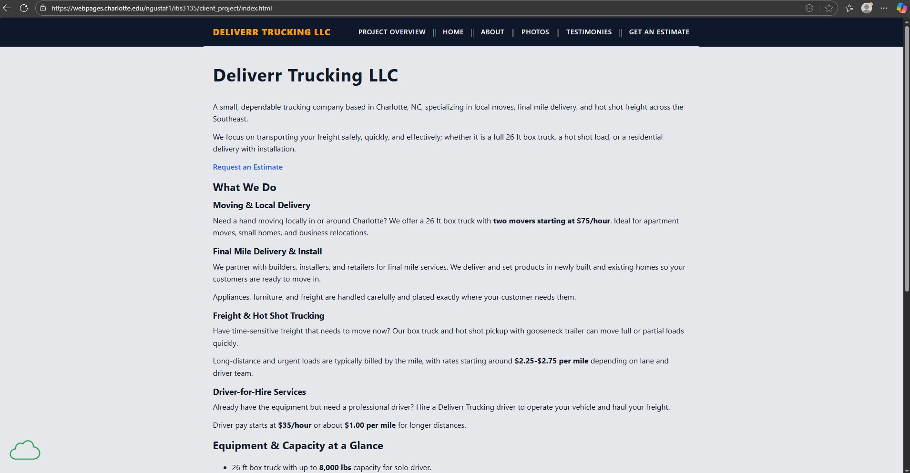

Peer Review 2
Gustafson, Nate

Nate's Project Page
- Design
-
Contrast: Looks clean and easy to read. The blue links are not hindered by the blue accents of the page due to the underlining with css
-
Repetition: CSS styling is consistent throughout the page
-
Alignment: Page elements are aligned well and cleanly
-
Proximity: Nothing feels out of place and spacing is clean and readable
- Links
-
Link from course page works correctly
-
Links to each of the sub pages work correctly in each direction
- Elements and Requirements
-
Page contains header, footer, and main
-
Correctly has index.html as home page
-
Page has a title
-
Page has multiple functional pages that all work correctly and coincide well
-
Navigation to other pages works correctly and has consistent visuals
- Notes
-
All around amazing page. My only notes are very minor.
-
On the photos page, I think there could be a small amount more space added between each picture. With the captions for each it feels like each element is slightly too close together
-
On the estimate page, I would see if there was a way to change the background for the "Typical Pricing" section in order to contrast between the "Service" and "Notes" sections.
-
All around amazing job